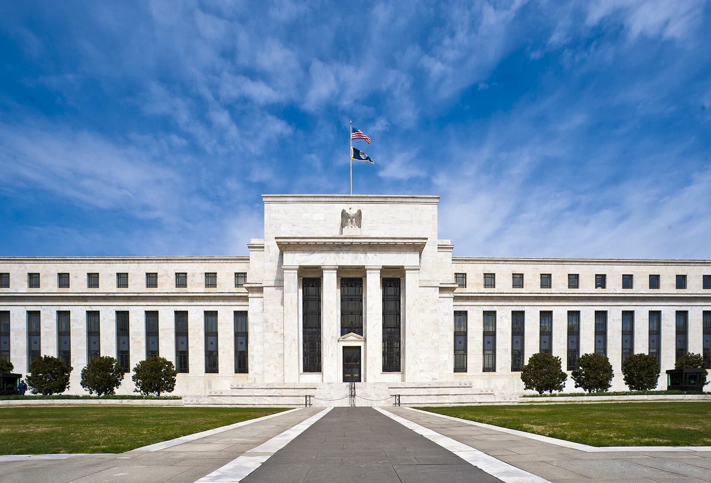

La Fed e la BCE lasciano i tassi fermi: cosa cambia per i mutui
La BCE si ferma con l'inflazione quasi al doppio dell'obiettivo. Nel 2021 l'energia era «temporanea» e l'hanno pagata i più poveri: stavolta meglio alzare presto che tardi.
Redazione Contrappunto · aggiornato il 29.10.2026 · 1 rettifiche

.jpg){kind=link}
La Federal Reserve (Fed) è la banca centrale degli Stati Uniti: decide quanto costa il denaro alle banche americane. La Banca centrale europea (BCE), con sede a Francoforte, fa lo stesso per i paesi dell'euro, Italia compresa. Mercoledì 28 ottobre si è riunita la Fed; oggi, giovedì 29 ottobre, la BCE. Per chi ha un mutuo a tasso variabile in Italia conta soprattutto la seconda.
Vedi di più: 4 parole spiegate, cosa si racconta
Cosa si raccontaLe testate americane raccontano una Fed che sta ferma ma è divisa, e che cambia il modo di parlare ai mercati. La stampa economica descriveva alla vigilia una BCE avviata a una pausa, ed è andata così. [CNBC] [CNN] [Milano Finanza]
- Tasso sui depositi della BCE
- L'interesse che la BCE paga alle banche che le lasciano soldi in deposito. È il tasso guida dell'area euro: quando sale o scende, a cascata cambia il costo dei prestiti, mutui compresi.
- Mutuo a tasso variabile
- Un mutuo la cui rata cambia nel tempo: di solito è legata all'Euribor più un margine fisso della banca.
- Euribor
- Il tasso a cui le banche dell'euro si prestano denaro tra loro. Si muove con le decisioni della BCE e con quello che i mercati si aspettano che la BCE faccia.
- Forward guidance
- In italiano «indicazioni prospettiche»: quando una banca centrale dice in anticipo cosa pensa di fare con i tassi nei mesi successivi.
- Mercoledì 28 ottobre la Fed ha lasciato i tassi fermi tra il 3,75 e il 4%, con due voti a favore di un rialzo.
- Oggi la BCE ha lasciato fermi i suoi tre tassi: 2,50% sui depositi, 2,65% sul rifinanziamento principale, 2,90% sul marginale. I mercati scommettono su un rialzo a dicembre.
Ieri la Fed, oggi la BCE: tutte e due hanno lasciato i tassi fermi. Per un mutuo variabile italiano conta Francoforte: depositi al 2,50%, dopo i rialzi di giugno e settembre. [1] [4]
CNN racconta una Fed ferma ma divisa: due membri su dodici volevano già alzare. Reuters racconta una BCE ferma ma preoccupata, perché i rincari dell'energia spingono l'inflazione. I mercati scommettono su un rialzo a dicembre. [4] [6]
Il punto è che questo film l'abbiamo già visto. Nel 2021 la BCE chiamò temporanei i rincari e aspettò. A ottobre 2022 l'inflazione era al 10,6%, e non l'hanno pagata tutti uguale: in Italia i più poveri avevano un'inflazione dell'11,6%, i più ricchi del 7,6%. Lagarde nel 2024 l'ha ammesso: abbiamo sbagliato. [10] [11] [12] [13]
Oggi lo shock è di nuovo l'energia, con la guerra con l'Iran, e l'inflazione è al 3,8%: quasi il doppio dell'obiettivo. Un rialzo non abbassa il prezzo del petrolio, ma impedisce che il rincaro passi a tutto il resto. Per noi la BCE deve alzare a dicembre e dirlo chiaro da subito: meglio un rialzo un po' presto che uno in ritardo di un anno. [14] [15]
E il governo non remi contro. La manovra porta il deficit al 3,4% del PIL: spendere a debito mentre la BCE frena vuol dire un piede sul freno e uno sull'acceleratore, e chi ha un mutuo variabile paga tutti e due. A chi legge diciamo due cose: i soldi fermi sul conto allo 0,67% con i prezzi al 3,8% perdono valore ogni mese; e chi ha il variabile faccia adesso i conti sul fisso con la sua banca, non a dicembre. [17] [16]
La verifica punto per punto9 passaggi, 18 fonti
Qui sotto ogni cosa scritta sopra, una per una, con le fonti. Confermato: lo dice un documento originale o più fonti lette. Plausibile: lo riportano fonti serie, ma non abbiamo letto l'originale. Discordante: le fonti danno numeri diversi, e diciamo quali. Ipotesi e Opinione sono il nostro ragionamento, separato dai fatti.
Washington · ferma, ma con due voti per alzare
Mercoledì 28 ottobre la Fed ha lasciato il suo tasso di riferimento tra il 3,75 e il 4%. Il voto è finito 10 a 2: la governatrice Lisa Cook e la presidente della Fed di Cleveland Beth Hammack volevano un rialzo di un quarto di punto.
Il presidente della Fed Kevin Warsh è contrario alla forward guidance: la Fed dà meno indicazioni su cosa farà nei mesi successivi.
Francoforte · una pausa, non uno sconto
Oggi la BCE ha lasciato fermi i suoi tre tassi: 2,50% sui depositi, 2,65% sulle operazioni di rifinanziamento principali, 2,90% sul rifinanziamento marginale. Era la pausa attesa, dopo i rialzi dell'11 giugno e del 10 settembre. La BCE indica nei rincari dell'energia un rischio di inflazione più alta e crescita più bassa; i mercati scommettono su un rialzo a dicembre.
Il precedente · 2021-22, l'energia «temporanea»
Nel 2021 la BCE chiamò temporanei i rincari e aspettò ad alzare i tassi. A ottobre 2022 l'inflazione dell'area euro toccò il 10,6%; nel terzo trimestre 2022 in Italia i più poveri avevano un'inflazione dell'11,6%, i più ricchi del 7,6%. Nel 2024 Lagarde ha ammesso: «we got that wrong», abbiamo sbagliato.
Oggi · un nuovo shock dell'energia
Nel 2026 la guerra con l'Iran ha riacceso i prezzi di petrolio e gas: a settembre l'inflazione dell'area euro è salita al 3,8%, quasi il doppio dell'obiettivo del 2%. A giugno i depositi in banca in Italia rendevano in media lo 0,67%.
Intanto in Italia la manovra approvata dal governo porta il deficit al 3,4% del PIL nel 2027, dal 2,9% del 2026.
Il nostro ragionamento
Due voti per alzare i tassi dicono che negli Stati Uniti la prossima mossa potrebbe essere verso l'alto. E senza indicazioni in anticipo, le sorprese sui mercati possono diventare più frequenti.
Ragionamento: Un dissenso a favore del rialzo, in una banca centrale che sta ferma, indica da che parte spinge la minoranza. Se la Fed smette di anticipare le sue mosse, i mercati non hanno più quel segnale e devono indovinare a ogni riunione. Fiducia media: due voti non fanno una maggioranza e gli effetti della nuova comunicazione si vedranno solo nei prossimi mesi.
Un rialzo dei tassi non abbassa il prezzo del petrolio. Serve a impedire che il rincaro dell'energia passi a tutto il resto, prezzi e salari, come nel 2022. Per questo la pausa ha senso solo se è breve.
Ragionamento: Nel 2021-22 lo shock era dell'energia e fu chiamato temporaneo; l'attesa ha lasciato salire l'inflazione al 10,6%. Oggi lo shock è di nuovo dell'energia e l'inflazione è al 3,8%.
Questo film l'abbiamo già visto. Nel 2021 l'energia era «temporanea» e il conto l'hanno pagato i più poveri e chi teneva i soldi sul conto. Oggi la BCE deve alzare a dicembre e dirlo chiaro da subito: meglio un rialzo un po' presto che uno in ritardo di un anno. E il governo non remi contro: spendere a deficit mentre la BCE frena vuol dire un piede sul freno e uno sull'acceleratore, e chi ha un mutuo variabile paga tutti e due.
Fonti18, tutte con il link
- Monetary policy decisions (29 ottobre 2026) (Banca centrale europea) · consultata il 29.10.2026
- La Federal Reserve e la decisione sui tassi del 28 ottobre (titolo dall'indirizzo del pezzo) (NPR) · consultata il 29.10.2026
- Fed rate decision: i punti chiave della riunione di Warsh (titolo dall'indirizzo del pezzo) (CNBC) · consultata il 29.10.2026
- Fed keeps interest rates unchanged, but two officials dissented in favor of a rate hike (CNN) · consultata il 29.10.2026
- Bce verso una pausa sui tassi, focus dei mercati su Francia e addio di Lagarde. Cosa aspettarsi dalla riunione del 29 ottobre (Milano Finanza) · consultata il 29.10.2026
- ECB Keeps Rates Steady, Warns of Rising Inflation Risks (Reuters) (Global Banking and Finance) · consultata il 29.10.2026
- ECB holds key interest rates steady, deposit rate remains at 2.50% (Sweden Herald) · consultata il 29.10.2026
- ECB raises interest rates in long-telegraphed move (Kitco / Dow Jones) · consultata il 29.10.2026
- La BCE torna ad alzare i tassi di 25 punti base in linea alle attese (Teleborsa) · consultata il 29.10.2026
- ECB press conference - introductory statement (8 luglio 2021) (BIS / Banca centrale europea) · consultata il 29.10.2026
- Eurozona, a ottobre inflazione al 10,6 per cento. In Italia schizza al 12,6 per cento (Eunews) · consultata il 29.10.2026
- Inflazione, per le famiglie più povere i prezzi salgono dell’11,6% mentre per i più abbienti l’impatto si ferma a +7,6%. Ecco perché (Il Fatto Quotidiano) · consultata il 29.10.2026
- IMF / Lagarde lecture global economy (20 settembre 2024) (UN Web TV) · consultata il 29.10.2026
- ECB holds rates at 2.25% as the reignited Iran war keeps a second hike in play (Euronews) · consultata il 29.10.2026
- Inflation in the eurozone accelerated to 3.8% in September (GMK Center) · consultata il 29.10.2026
- Mutui, Taeg al 3,95% dopo il rialzo Bce. Bankitalia: prestiti alle famiglie +2,7% (QuiFinanza) · consultata il 29.10.2026
- Documento programmatico di finanza pubblica 2026 – Dossier del Servizio studi (Documentazione di finanza pubblica n. 20, 6 ottobre 2026) (Camera dei deputati) · consultata il 29.10.2026
- Italy approves 2027 budget with tax hikes on banks and energy firms (Reuters, ripreso da WTVB) (Reuters) · consultata il 29.10.2026
- 29.10.2026: Aggiunta la decisione della BCE di oggi (tassi invariati: deposito 2,50%, rifinanziamento 2,65%, marginale 2,90%); tolta la frase sulla decisione attesa nel pomeriggio.